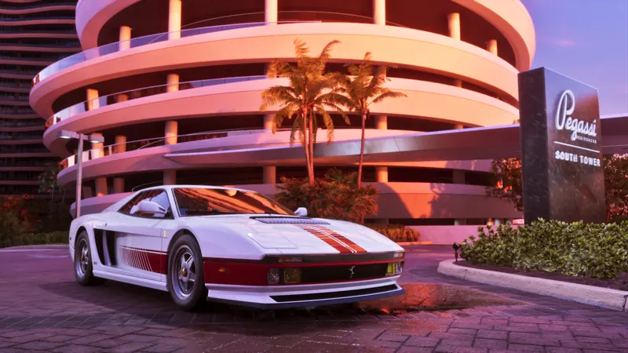

¿Cuál es el coche más rápido de GTA 6? Ranking y dónde encontrarlos
Respuesta corta
Según las guías, el Truffade Thrax, con un 8,7 sobre 10 en la nota de Velocidad del juego, seguido del Progen Emerus (8,3) y el Pegassi Vitello (8,2). El juego no da kilómetros por hora y no todas las guías coinciden. Abajo tienes los 11 más rápidos y dónde encontrar cada uno.

Primero: el juego no da kilómetros por hora
GTA 6 no enseña la velocidad máxima de los coches. Lo que enseña es una nota de Velocidad de 0 a 10, y es la que usan todas las guías para ordenarlos. A 22 de noviembre nadie ha publicado velocidades medidas en el juego. Si ves cifras en km/h, desconfía: son estimaciones o vienen de GTA Online (RetroGems, por ejemplo, da unas 127 millas por hora para el Emerus, pero medidas en GTA Online).
El podio, según las guías
- Truffade Thrax: 8,7. Es la nota de su ficha en GTABase y la que dan Beebom y Tech Nerdiness. No está aparcado en ningún sitio fijo.
- Progen Emerus: 8,3. El más fácil de conseguir de los tres: hay uno en un contenedor en Waxman Island, sin llave ni localizador (Game Rant).
- Pegassi Vitello: 8,2. Aparcado delante de una mansión verde clarito en Capri, pero sin la llave clonada no te lo llevas.
Por qué cada guía dice una cosa
- Timesaver (21 de noviembre) y MeowDB (22 de noviembre) no incluyen el Thrax. Timesaver pone primero al Emerus; MeowDB, al Infernus '96 con piezas (8,6).
- El ranking que GTABase publicó el 19 de noviembre solo tenía 30 coches y ponía arriba al Infernus '96 con un 7,1. La propia web avisa de que es provisional, y su ficha del Thrax ya le da un 8,7.
- Las notas son de los coches de serie. Con mejoras de taller pueden cambiar.
Los más rápidos y dónde encontrar cada uno
Ordenados por la nota de Velocidad que dan las guías (entre paréntesis, quién la da). Los empates van en el orden de Tech Nerdiness.
| Coche | Velocidad (sobre 10) | Dónde está y cómo conseguirlo |
|---|---|---|
| 1. Truffade Thrax | 8,7 (GTABase, Beebom, Tech Nerdiness) | Sin sitio fijo publicado. Beebom y Tech Nerdiness lo ligan a la lista de encargos de Randy (el que te pide coches robados). También tiene truco para hacerlo aparecer: se desbloquea al terminar la historia y completar todos los desafíos de compras, pero su código aún no se conoce (ver trucos). |
| 2. Progen Emerus | 8,3 (Beebom, Tech Nerdiness, Timesaver) | Dentro de un contenedor en el robo de Waxman Island, al este de Vice City: no necesita llave ni lleva localizador (Game Rant). Otro, el «Royal Ruby», en el garaje del patio de una mansión vigilada de Vespucci Island (Detonated). Aparece a veces por los barrios ricos de Vice City (Beebom, Tech Nerdiness). Su truco de aparición pide completar todos los desafíos de vehículos. |
| 3. Pegassi Vitello | 8,2 (Beebom, Tech Nerdiness, Timesaver, MeowDB) | Delante de una mansión verde clarito en la península del noroeste de Capri, Mariana County (GamingBolt, Beebom); en el garaje de una villa de Flamingo Pinkway, Waning Sands, y en el de una mansión de Starfish Island (Beebom, Tech Nerdiness). Hace falta clonar la llave. |
| 4. Piccia Furia | 7,8 (Beebom, Tech Nerdiness, Timesaver, MeowDB) | En el garaje de una casa amarilla de Palladia Lane, Peacock Estates, y delante de una mansión de Capri (Beebom, Tech Nerdiness, GamingBolt). Con llave clonada. |
| 5. Bravado Gauntlet Hellfire | 7,8 (Beebom, Tech Nerdiness, Timesaver, MeowDB) | En el desguace All Grade Scrapyard, en el borde sureste de Hamlet, al este de Boone Speedway (Beebom, Tech Nerdiness). Con llave clonada. |
| 6. Pfister Comet S2 | 7,7 (Beebom, Tech Nerdiness, Timesaver) | Te lo dan en una misión de la historia (Beebom, Tech Nerdiness). Timesaver avisa de que su nota sale de una sola fuente. |
| 7. Pegassi Tempesta | 7,6 (Beebom, Tech Nerdiness, Timesaver, MeowDB) | Aparcado a menudo en la entrada de los hoteles Eden Grove Mariana, en Vice Beach (GamingBolt, Beebom); junto a una cabaña al oeste del lago Tallaloko; o soltándolo de la grúa en el embargo de NE 3rd Street, hacia la una del mediodía del juego (Beebom, Tech Nerdiness). |
| 8. Grotti Itali RSX | 7,5 (Tech Nerdiness, Timesaver) | En un garaje preparado de Rialto Island; hace falta la llave clonada para sacarlo (Detonated). |
| 9. Zorrusso | 7,5 (Tech Nerdiness, Timesaver, MeowDB) | Delante de una mansión con columnas en Capri (GamingBolt); también lo robas en una misión de la historia (Tech Nerdiness). La marca sale como Grandforma o Granforma según la guía. |
| 10. Pfister Neon | 7,1 (Tech Nerdiness, Timesaver, MeowDB) | Sin ubicación publicada todavía. |
| 11. Pegassi Infernus '96 | 7,1 (Timesaver (MeowDB: 8,6 con piezas)) | En el garaje de una casa blanca de la península del noroeste de Capri (GamingBolt). |
Cómo llevártelos
- La llave clonada. La mayoría de estos coches están cerrados: hace falta el clonador de llaves, que se desbloquea al avanzar en la historia (Beebom, Detonated).
- El localizador. Algunos coches caros llevan un localizador avanzado; según Detonated, se puede quitar más adelante en la historia. El Emerus del contenedor no lleva (Game Rant).
- Quedártelo. Para guardarlo como vehículo personal hay que registrarlo en un Pay 'n' Spray: 29.000 $ el Emerus, según Game Rant; Tech Nerdiness dice que, después del primer registro gratis, los coches caros pueden pasar de 20.000 $ cada uno. Más en garajes y Pay 'n' Spray.
- Precios de compra. Ninguna guía da todavía un precio de compra de estos coches en la historia.
- El Grotti Cheetah '95 solo está en la Ultimate Edition (GTABase, GamingBolt).
Iremos actualizando la lista cuando aparezcan velocidades medidas o nuevas ubicaciones en fuentes fiables.
Fuentes
- GTABase: ficha del Truffade Thrax en GTA 6
- GTABase: coches más rápidos de GTA 6, ranking provisional (19-11-2026)
- Beebom: los 7 coches más rápidos de GTA 6 (21-11-2026)
- Tech Nerdiness: los 10 más rápidos por nota de velocidad (22-11-2026)
- Timesaver: coches más rápidos de GTA 6 por nota de velocidad (21-11-2026)
- MeowDB: coches de GTA 6 ordenados por estadísticas (22-11-2026)
- GamingBolt: los 10 coches más rápidos y dónde encontrarlos (21-11-2026)
- Game Rant: el robo de Waxman Island y su Emerus (21-11-2026)
- Detonated: ubicaciones de coches raros de GTA 6 (22-11-2026)
- RetroGems: ficha del Emerus (cifras de GTA Online)
Resumen redactado por 6 Estrellas a partir de las fuentes citadas, revisadas el 20 de noviembre de 2026. Si ves un error, cuéntanoslo desde Quiénes somos.